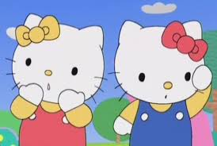

Au existat mai multe serii diferite de televiziune Hello Kitty. Prima serie de televiziune animată a fost Hello Kitty's Furry Tale Theater , care a conţinut 13 episoade şi a fost difuzată în 1987. Următoarea, un OVA numit Hello Kitty and Friends, a ieşit în 1993 şi a avut tot 13 episoade. Hello Kitty's Paradise a apărut în 1999 şi a fost conceput din 16 episoade. Hello Kitty's Stump Village a apărut în 2005 şi The Adventures of Hello Kitty & Friends a ieşit în 2006 şi a fost difuzat în 52 de episoade. Seria Kiss Hello Kitty nu s-a mai difuzat niciodată.
Hello Kitty's Paradise a fost un program live de acţiune pentru copii,de lungă durată, care a fost difuzat pe TXN din ianuarie 1999 până în martie 2011.Acea săptămână,s-a înregistrat ca fiind săptămâna cu cel mai longeviv program de televiziune din istoria reţelei. În ianuarie 2011, creatorii show-ului au căzut de comun acord să pună capăt seriei după douăsprezece sezoane, cu ultimul episod difuzat la 29 martie.
